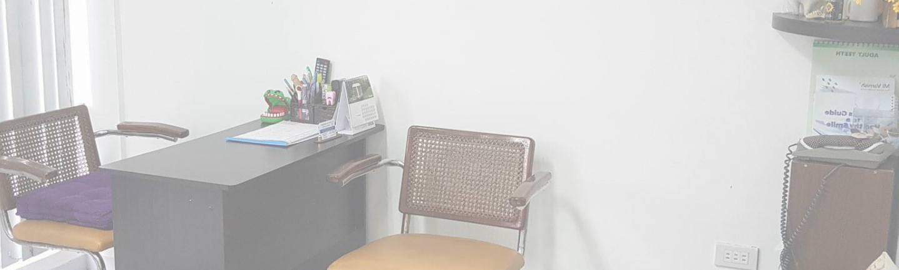
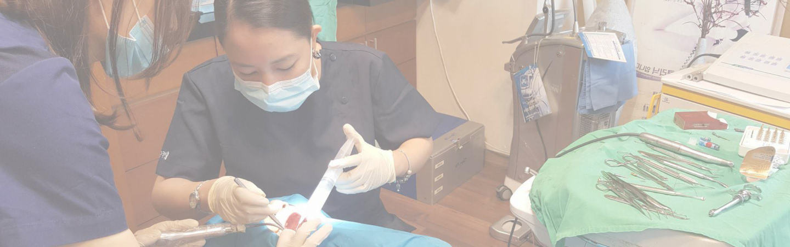
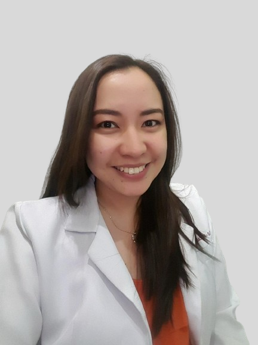
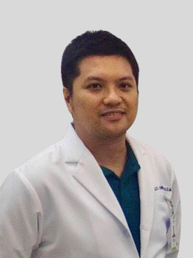

Sulit & Bagasan Dental Office

ABOUT US
“A healthy smile is the perfect smile.”
MISSION
Our goal is to provide comprehensive dental care, emphasizing patient
education at Sulit and Bagasan Dental Office. We aim to create a
friendly environment, delivering personalized care using advanced
technology for the best treatment experience.
VISION
We envision a community with excellent oral health, where everyone has
access to quality dental care and knowledge. Our commitment is to be a
trusted partner in enhancing oral health awareness, contributing to a
healthier community, and bringing smiles to people's faces.
Sulit and Bagasan Dental Office
Established in 2017, Sulit and Bagasan Dental Office has been a
friendly place for dental care, focusing on taking good care of your
teeth and teaching patients how to keep their smiles healthy. They
offer various services like tooth extractions and root planning to
maintain and improve oral health. The clinic is committed to making
you feel comfortable by providing personalized care in a welcoming
environment. To ensure the best treatment, the clinic uses modern
technology and follows standard methods. Sulit and Bagasan Dental
Office's goal is to contribute to a healthier community, one smile at
a time, and they're excited to welcome new patients to join their
journey.

OUR TEAM

Dr. Ana Dominique E. Bagasan
Attended the University of the Philippines Rural High School and completed their Doctor of Dental Medicine degree at UP Manila. With over ten years of experience, their focus areas include Endodontics, Surgery, and Pediatric Dentistry. They contributed to Dentpro Dental Clinic (2012-2020), Kirdlappi Dental Clinic (2013-2015), Oracle Korean Aesthetic Clinic (2017-2019), and Yoyo Korea Dental Clinic in Paju, South Korea (2018). Presently, they have been a valuable member of Sulit and Bagasan Dental Office since 2017.

Dr. Jan Vincent Michael G. Sulit
Graduated from the University of the Philippines Rural High School and earned a Doctor of Dental Medicine degree at UP Manila. With over ten years of experience, their expertise includes Endodontics, Surgery, and Pediatric Dentistry. They've played key roles in dental clinics such as Dentpro Dental Clinic (2012-2020), Kirdlappi Dental Clinic (2013-2015), Oracle Korean Aesthetic Clinic (2017-2019), and Yoyo Korea Dental Clinic in Paju, South Korea (2018). Since 2017, they have been a valuable asset to Sulit and Bagasan Dental Office.